This set explores red wall minimalist fashion shoot through retro aesthetics and romantic tone under neon lights. Compositions use wide shot with minimal set, keeping focus clear and tidy. Details like sporty styling and balanced colors make browsing easy.
Browse redroom images. Page 3 of curated redroom-style portrait collection.
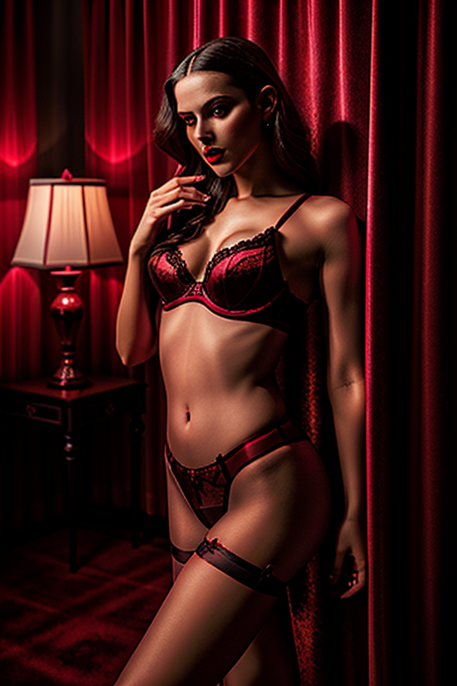 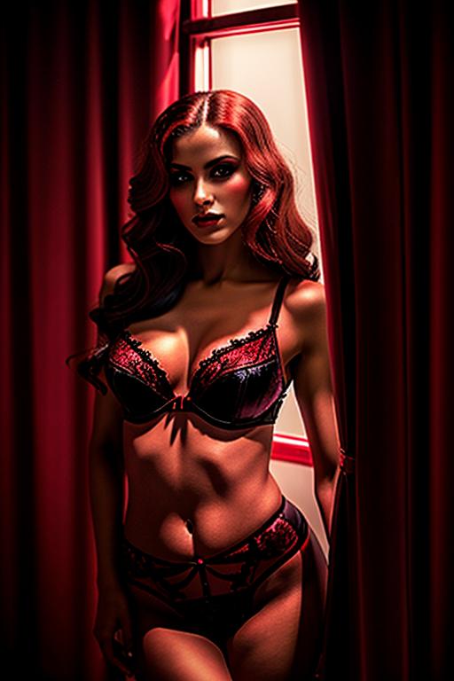 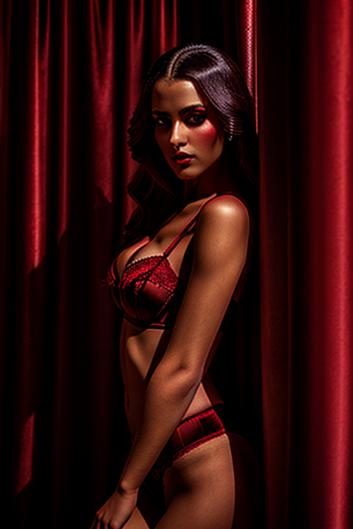 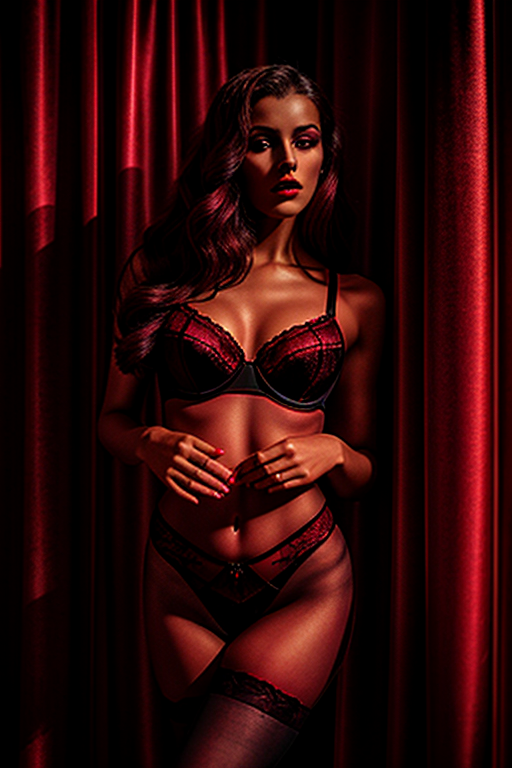 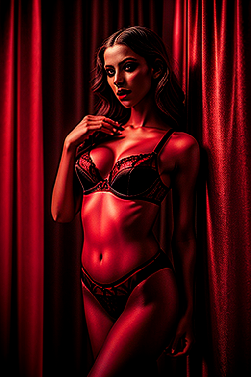 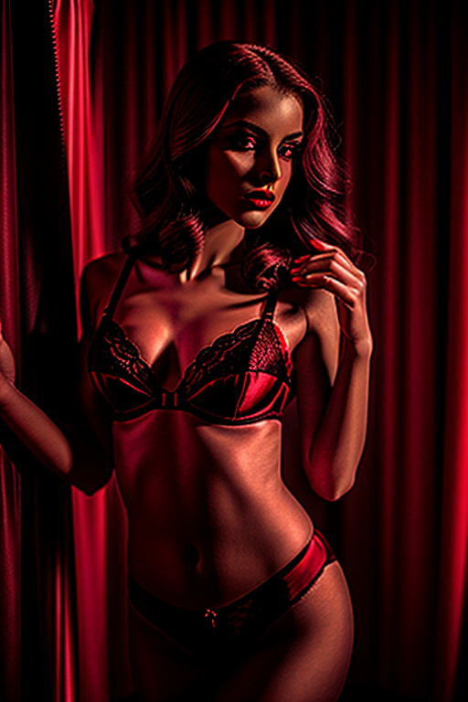 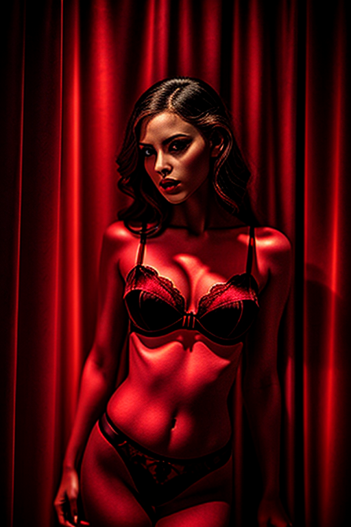 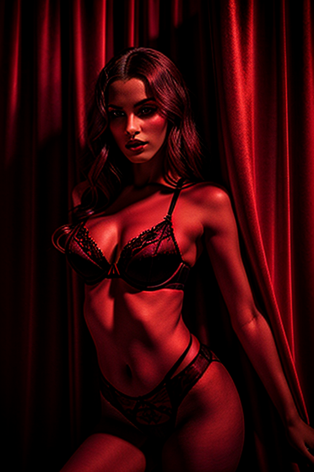 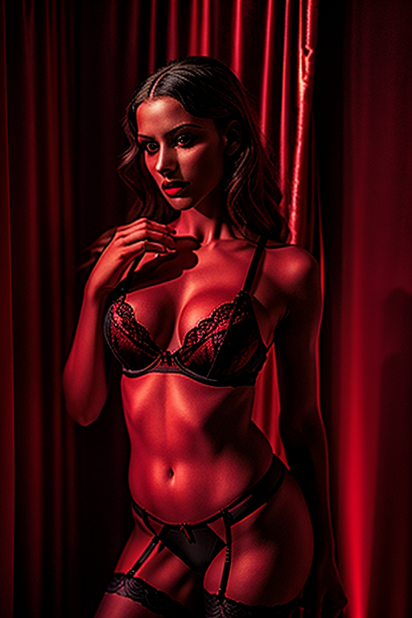 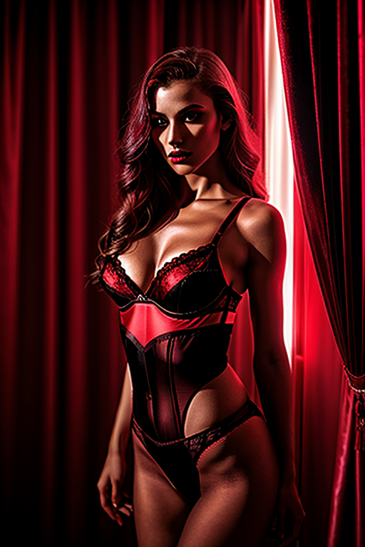 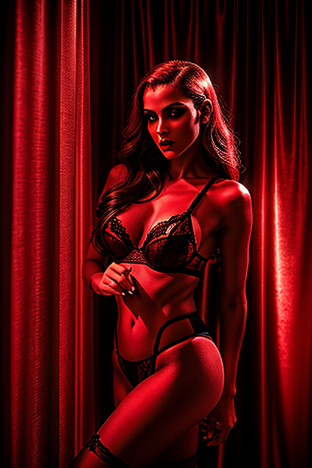 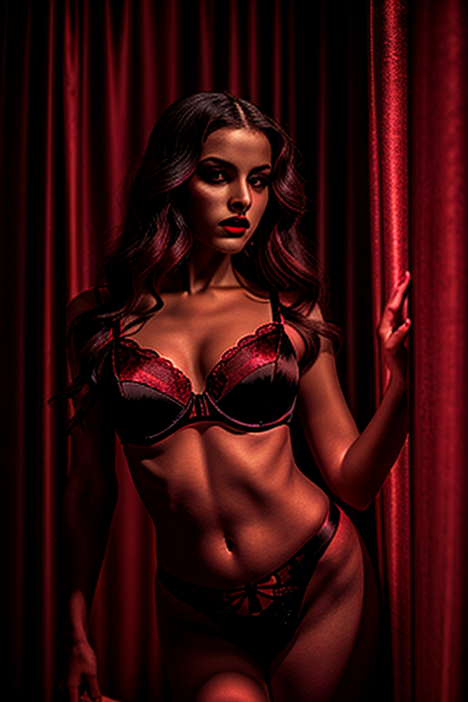 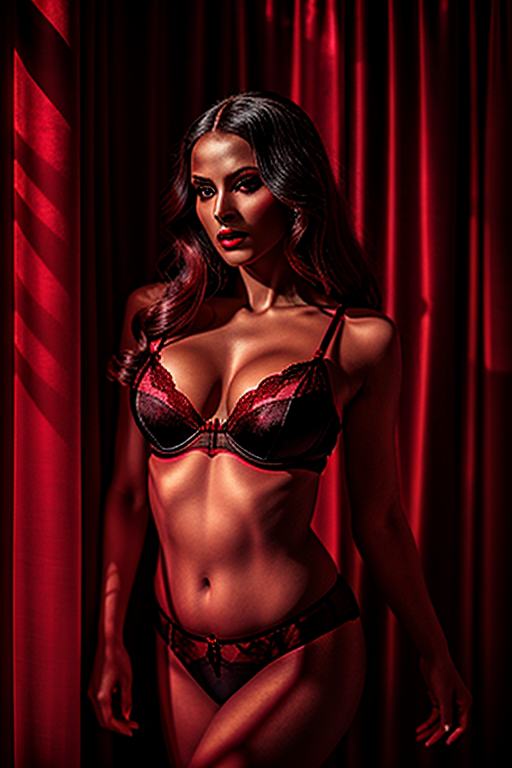 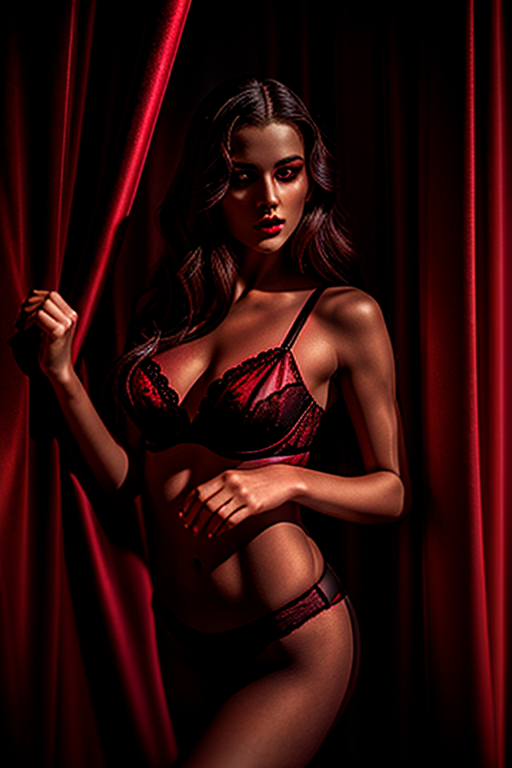 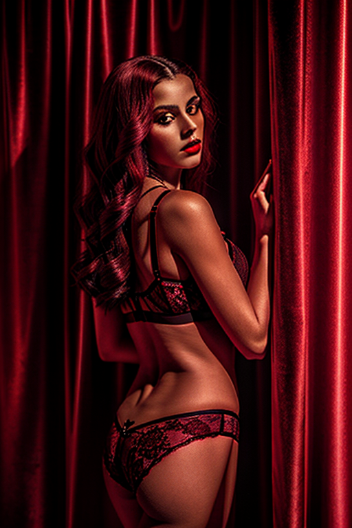 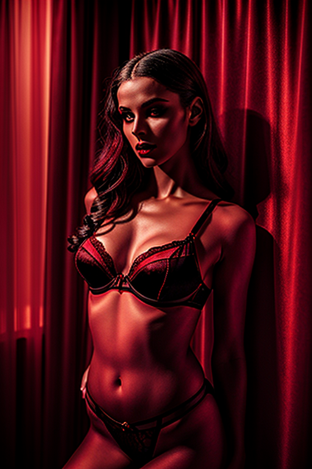 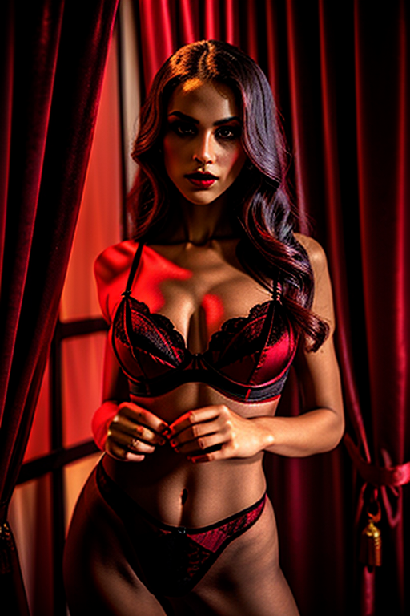 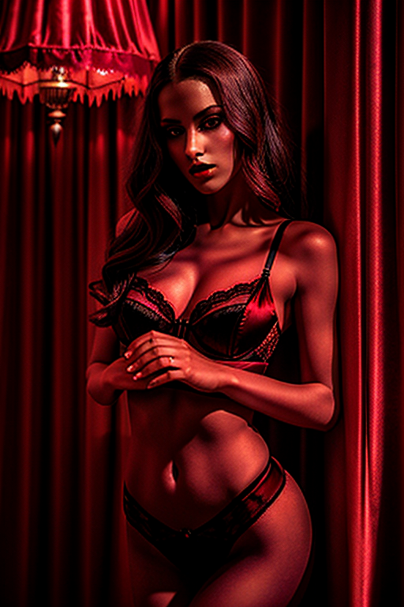This page explores page3 with a practical focus on visual detail and browsing experience. Alt text and headings are optimized to make the content accessible and to provide consistent cues across the site. Subtle differences in wording help avoid duplication across similar pages. Bookmark the page if it’s useful; updates aim to improve clarity, speed, and overall structure over time. The image aims to deliver a straightforward visual impression while keeping the file lightweight. A brief explanation clarifies the subject and lighting so visitors can quickly decide where to go next. The image aims to deliver a straightforward visual impression while keeping the file lightweight. A brief explanation clarifies the subject and lighting so visitors can quickly decide where to go next. Internal navigation leads to related items with comparable tone or composition. This reduces bounce and supports exploration within the same theme.